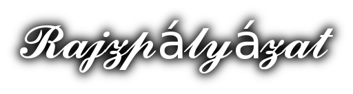
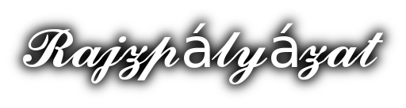

pályázati rajzaim
Itt találhatók a pályázatokra készített rajzaim. Az első képen egy "Az Örség ahogy én látom" című 2016-ban kiirt rajzpályázaton elért különdíjas munkám látható.
2 rajz lesz itt

Itt találhatók a pályázatokra készített rajzaim. Az első képen egy "Az Örség ahogy én látom" című 2016-ban kiirt rajzpályázaton elért különdíjas munkám látható.
2 rajz lesz itt
